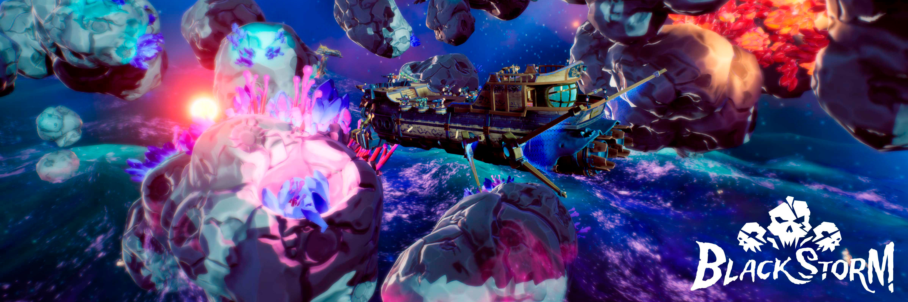
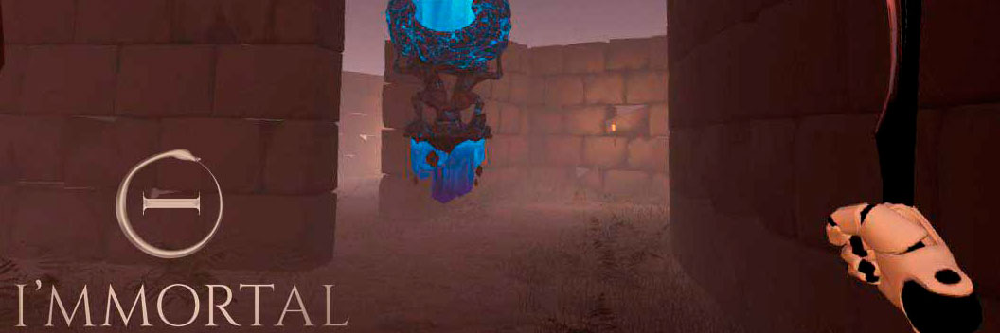

About Me
Hi, I`m Enrique Checa. A spanish game designer with a software engineering background, who just finished a Game Design Master at U-Tad University in Madrid
(Spain).
I discover the videogames industry and my love for making games three years ago, when I had the opportunity to attend the TrainJam (Game Jam in a train, Chicago - San Francisco) and
the GDC. During the trip I discovered I wanted to dedicate my self to make games. Since then I had participated in many other Game Jams (repeating TrainJam), work in the development of two
games at university and start a Game Design Master.
I`m hardworking, eager to learn and a team player. Ready to start my career in the videogames industry
Games

Title: Blackstorm
Development: February 2019 - Present
Team: 18 members
Engine: Unreal Engine 4
An online multiplayer Battle Royale where the players form crews of three pirates face each other in deadly combat. Sail with your space ship in a
three-dimensional enviroment with total freedom of movement and rotation. Loot, equip your ship, shoot your cannons, board the enemy, sabotage their ship
and raze them. The last crew win.
Work as Game Designer. Started the game form scratch, designing the main core, game systems, features and gameplay. Prototyping most of the
mechanics in UE4 blueprints. Especially focused on gameplay design and prototype, system design and UI design, prototype and implementation.

Title: Immortal
Development: 2017 - 2018
Team: 10 members
Engine: Unreal Engine 4
VR asynchronous PvP multiplayer game for two players, that play in teh same system (same PC). Inspired in the classic table RPG games,
one of the players (VR) is trapped in a dungeons and must get out. The other (gamepad & screen), the master of the dungeon,
must prevent it by casting spells, spawning enemies or planting traps.
Work as Programer and Producer. As programmer implementing the main gameplay and features. Focused on the player with no VR, implementing
the base character system and the habilities system. As producer my job was to create the production plans, manage the team and organize the
events we assist, like expos or conferences.

Title: The Unwanted Dream
Development: 2015 - 2016
Team: 9 members
Engine: Unity 3D
First person survival horror game. Very inspired by P.T the player is a little child that must survive in his own home, in a bad dram. With
only one mechanic, covering his faces with his hand when he is afraid. Using it to solve the different situations. Every time the player dies, the
dream starts over.
Work as Programmer. Implementing the features and gameplay (scripting). First game I develop.
Projects

WIP
Game Jams

Title: Killing Me Softly
Game Jam: Talentum Game Jam 2018
Team: 3 members
Engine: Unity 3D
Local multiplayer cooperative game, where each player controls a character like in a platformer. They are inside a submarine which they
control by interacting with various buttons scattered throughout the submarine, by standing in front on it. The will fight a very big crab, dodging
the attacks and killing him with the submarine weapons.
Title: The Beat
Game Jam: TrainJam 2018
Team: 4 members
Engine: Unreal Engine 4
First person shooter adventure game, where the player is a vaccine. His mission is to find his way through the host's veins, killing al the
diseases wile tries to reach the heart and kill the final boss, a unwelcome tumor that will kill the host.

Title: Mana4Life
Game Jam: Ludum Dare 40
Team: 4 members
Engine: Unreal Engine 4
Third person endless arcade kill-em-all game. Where the player have 3 that should be used to kill the enemies that will come ion waves. The mana
(used for the abilities) and the health are opposed, which means that if you use mana, your health increases, and if you get hurt, your mana increases.
Being essential to maintain the equilibrium between both.

Title: Super Space Gravity Battle (SGGB)
Game Jam: Ludum Dare 39
Team: 7 members
Engine: Unity 3D
Local 2D multiplayer PVP game. The players will fight wile they float in space, shooting each other projectiles. There are some planets in the level
with theirs own gravity, allowing the player to use the gravity of the nearest planet to help him to move through the map. But he must be careful, as
the projectiles are also affected by the gravity.

Title: TrainJam Defender
Game Jam: Train Jam 2017
Team: 6 members
Engine: Unity 3D
Tower defense in a train, train defense. The player will build his own train by buying the different types o wagons to protect the train. Each wagon
have his own characteristics that are better according to situation, the player must create the train as balance as possible. After the train is build
it will be attacked and the player should defend it, by using the left and right keys to slow down or speed up, to avoid the enemies.
Contact